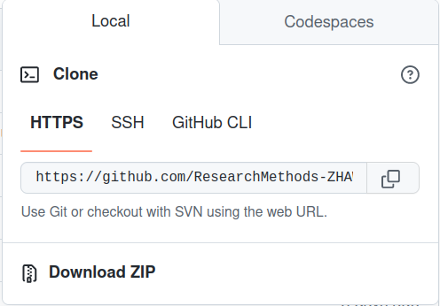
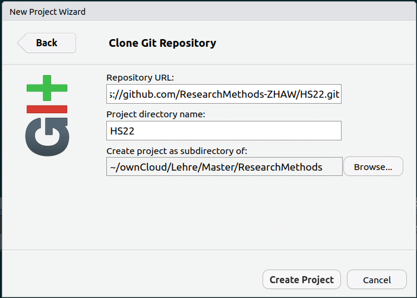

Unterlagen Research Methods
- Seit eingen Jahren mit RMarkdown
- Vorteile für Studis
- Reponsive Unteralgen (BYOD, Web3)
- Searchable
- Alles aus einem Guss, "one-stop-shop"
- Vorteile für Mitarbeiter
- Diverse Tools kennenlernen und anwenden (CI/CD Workflow)
- Code Peer Review
- Open Educational Resource (OER)
Prerequisites
- Installation
- R ≥ 4.2 (
R --version) - RStudio (2022.07.1+554)
- Git > 2.1 (
git --version - evt. Quarto (
quarto --version) - Github account
- Git konfiguration
Git Konfiguration
- Git braucht einen Benutzername und ein Passwort.
- Prüfen, ob diese in Git gespeichert sind:
git config --list
git config --global user.name "Vorname Nachname"
git config --global user.email "kuerzel@zhaw.ch"
# user.email muss gleich sein wie auf Github
# im repo:
git config user.name "Vorname Nachname"
git config user.email "kuerzel@zhaw.ch"
Git Konfiguration (II)
- Passwort authentifizierung auf Github.com deaktiviert
- es gibt nun 2 Optionen:
httpsundssh

Git Konfiguration (III)
- Wir empfehlen
https, dafür braucht es einen PAT - dafür können wir das R-package
usethiszur hilfe nehmen:
usethis::create_github_token()
gitcreds::gitcreds_set()
Git Konfiguration (IV)
- Um lokale Änderungen mit dem GitHub-Server zu synchronisieren, müssen wir das Projekt lokal "clonen"
- https://www.github.com/researchmethods-zhaw/hs22
Git Konfiguration (IV)
- RStudio: File > New Project > Version Control > Git 
git pull # button "Pull"
git add # häckchen setzen
git commit -m "my commit message" # button "Commit"
git push # button "Push"
Welcome to Quarto
- Ersetzt RMarkdown, syntax bleibt weitgehend gleich
- Markdown > html, pdf... (auch ohne Code)
- language agnostic (R, Python, Julia...)


Welcome to Quarto
- Standalone Software
- Comand Line Interface (CLI)
- Wird mit RStudio mitgeliefert
- kann aber auch separat installiert werden
project:
type: book
preview:
port: 5678
execute-dir: project
format:
html:
theme:
dark: darkly
light: flatly
bibliography: bibliography.bib
number-sections: false
code-tools: true
execute:
freeze: true
error: true
book:
title: "Research Methods HS22"
repo-url: https://github.com/ResearchMethods-ZHAW/HS22/
repo-actions: [edit]
downloads: [pdf]
sidebar:
logo: images/zhaw_sw_neg.png
collapse-level: 1
style: docked
chapters:
- index.qmd
- part: PrePro.qmd
chapters:
- prepro/Prepro1_Demo.qmd
- prepro/Prepro1_Uebung.qmd
- --
- prepro/Prepro2_Demo.qmd
- prepro/Prepro2_Uebung_A.qmd
- prepro/Prepro2_Uebung_B.qmd
- --
- prepro/Prepro3_Demo.qmd
- prepro/Prepro3_Uebung.qmd
- --
Design Choices
execute-dir: project
- Setzt die Working directory auf die Project directory
- d.h. working directory ist in jedem .qmd gleich
- Macht das package
hereobsolote? - Funktionert schlecht mit
knitr::include_graphics()
project:
type: book
- Zurück zur
bookStruktur (nicht mehrblog) - Vereinfacht die generierung eines pdfs work in progress
- Zwingt die explizite Nennung aller *.qmd Files (wird in Zukunft nicht mehr nötig sein)
.gitignoredata/
- der data folder ist nicht auf Github (Platzbedarf!)
- work in progress: Wie teilen wir die Datensätze?
freeze: true
- Computational documents should never be re-rendered during a global project render
- If you do an incremental render then code is always executed
# render single document (always executes code)
quarto render document.qmd
# render project subdirectory (always executes code)
quarto render articles
error: true
- Error messages werden ins Dokument eingebunden (!)